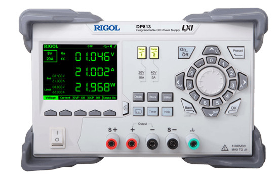
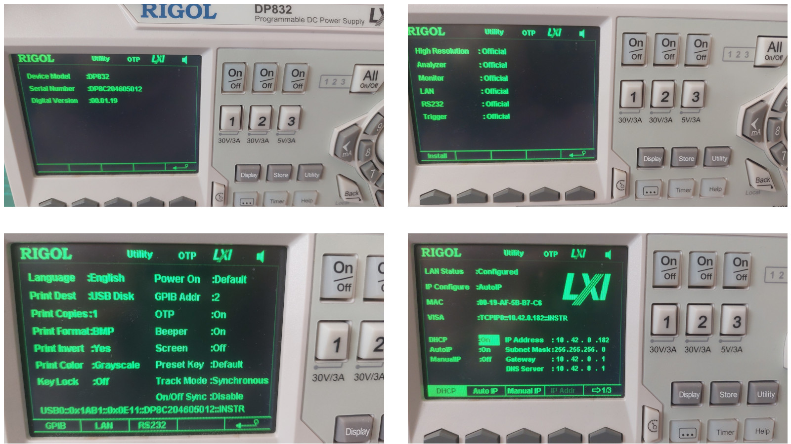
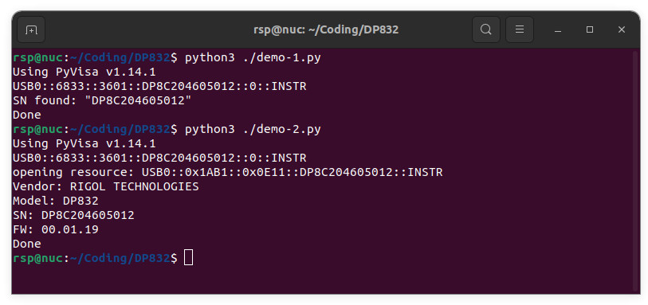
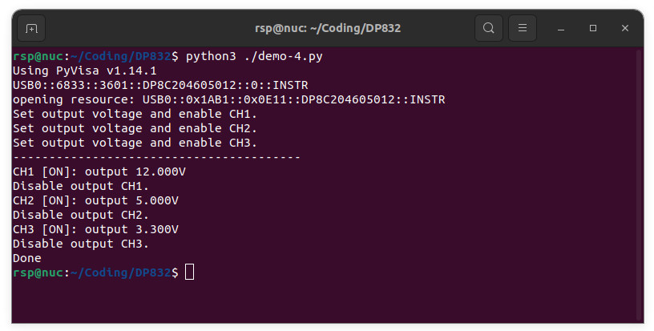
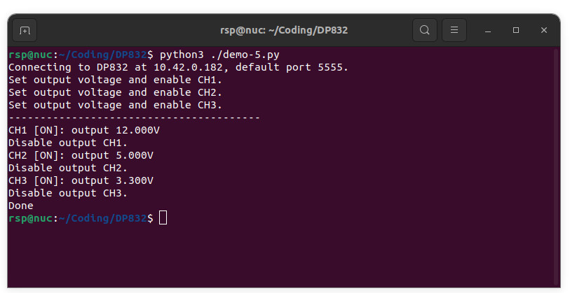
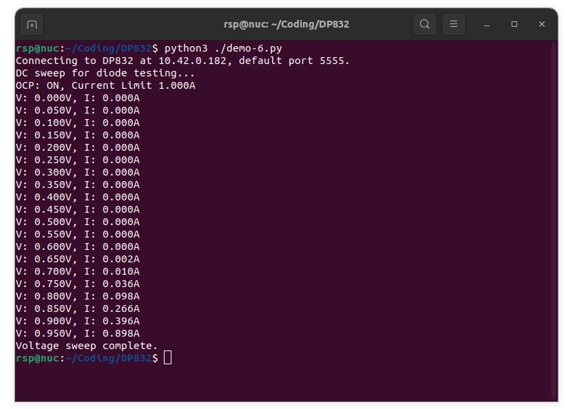

การเขียนโปรแกรม Python สำหรับ Rigol DP832 Programmable DC Power Supply#
Keywords: Rigol DP832, Programmable DC Power Supply, Python, LXI, SCPI
▷ แนะนำอุปกรณ์ Rigol DP832#
อุปกรณ์ DP832 ของบริษัท Rigol เป็นตัวอย่างอุปกรณ์ทางไฟฟ้า-อิเล็กทรอนิกส์ เพื่อทดสอบและวัดปริมาณทางไฟฟ้า (Test & Measurement Equipment) ที่จัดอยู่ในประเภท "แหล่งจ่ายแรงดันไฟ DC" ที่มีการควบคุมและรักษาระดับให้คงที่ และสามารถตั้งค่าได้ผ่านการควบคุมจากคอมพิวเตอร์ของผู้ใช้ได้ ทำให้เหมาะสำหรับงานทดลองในห้องปฏิบัติการ และงานทดสอบทางอุตสาหกรรม

รูป: อุปกรณ์ DP832 มุมมองด้านหน้า (Source: Rigol)
อุปกรณ์รุ่นนี้จัดอยู่ในซีรีย์ DP800 ของผลิตภัณฑ์ Rigol Linear DC Supply มีการจำหน่ายและใช้งานมามากกว่า 10 ปี และจำแนกเป็นรุ่นต่าง ๆ ตามจำนวนช่องเอาต์พุต (Output Channels) ระดับแรงดันไฟฟ้าและกระแสไฟฟ้าสูงสุดของแต่ละช่อง เป็นต้น
DP832 / DP832A มีเอาต์พุต 3 ช่อง
- CH1: 30V / 3A
- CH2: 30V / 3A
- CH3: 5V / 3A
ความสามารถในการควบคุมเอาต์พุตสำหรับโหลด (Load Regulation) อยู่ในช่วง ±(Output Percentage + Offset)
- Voltage: ±(0.01% + 2mv)
- Current: ±(0.01% + 250μA)
ผู้ใช้สามารถเปิดใช้งานฟังก์ชันป้องกันแรงดันหรือกระแสไฟฟ้าเกิน โดยสามารถตั้งค่าหรือโปรแกรมค่าในช่วงต่อไปนี้ได้
- OVP (Over-Voltage Protection): 10mV .. 33V
- OCP (Over-Current Protection): 1mA .. 3.3A
ยกตัวอย่างการใช้งานในโหมด OCP ซึ่งจะมีการตั้งพิกัดกระแสสูงสุด ไม่ให้เกินค่าที่กำหนดไว้ แล้วทดลองปรับเปลี่ยนค่าแรงดันไฟฟ้าเอาต์พุต เพื่อจ่ายให้โหลดที่นำมาทดสอบ
รุ่น DP832A มีราคาสูงกว่า แต่มีคุณสมบัติบางประการที่ดีกว่า DP832 เช่น
- ความละเอียดในการตั้งค่าหรือโปรแกรมค่า (Programming Resolution)
- DP832: 10mV / 1mA
- DP832A: 1mV / 1mA
- ความละเอียดในการแสดงค่าตัวเลข (Display Resolution)
- DP832: 10mV / 10mA
- DP832A: 1mV / 1mA
- รูปแบบการเชื่อมต่อ
- USB (Optional: LAN RS232, Digital IO)
- USB, LAN, RS232, Digital IO
DP832 / DP832A สามารถสื่อสารกับคอมพิวเตอร์ เพื่อสั่งการและอ่านค่าการวัดผลได้ผ่านหลายช่องทาง ได้แก่:
- USB: ใช้โปรโตคอล VISA (Virtual Instrument Software Architecture) ซึ่งเป็น API หรือ ไลบรารีที่ใช้ในการสื่อสารกับเครื่องมือวัด และ SCPI (Standard Commands for Programmable Instruments) เป็นชุดคำสั่งมาตรฐาน (IEEE 488.1 / IEEE 488.2) ที่ใช้ในการควบคุมเครื่องมือวัด เช่น ออสซิลโลสโคป เครื่องกำเนิดสัญญาณ เป็นต้น
- LAN: รองรับมาตรฐาน LXI (LAN eXtensions for Instrumentation) ทำให้สามารถควบคุมผ่านเครือข่ายภายในและรองรับการเขียนโปรแกรมทางไกล
- RS-232: รองรับพอร์ตอนุกรม
ตัวอย่างการประยุกต์ใช้งานอุปกรณ์ประเภทนี้ ได้แก่
- การทดสอบวงจรอิเล็กทรอนิกส์ เช่น การตั้งค่าแรงดันไฟฟ้าและพิกัดกระแสไฟฟ้าสูงสุด สำหรับอุปกรณ์ที่ต้องการทดลอง
- ระบบทดสอบอัตโนมัติ (Automated Test Equipment: ATE) และเขียนโปรแกรมควบคุมด้วยภาษาคอมพิวเตอร์
- การทดสอบหาความสัมพันธ์แรงดันกับกระแสไฟฟ้าแบบอัตโนมัติ (Automated V-I Curve Tracing) เช่น สำหรับไดโอด หรือ LED และทรานซิสเตอร์ เป็นต้น
การควบคุมหรือตั้งค่าใช้งาน DP832 สามารถทำได้ โดยใช้ภาษาคอมพิวเตอร์ เช่น C/C++, Python, LabVIEW หรือ MATLAB โดยใช้คำสั่ง SCPI ซึ่งเป็นมาตรฐานที่ใช้กับอุปกรณ์วัดทางไฟฟ้าและอิเล็กทรอนิกส์ แต่ในบทความนี้จะกล่าวถึง การใช้ภาษา Python เท่านั้น

รูป: ตัวอย่างหน้าจอแสดงผลในการตรวจสอบข้อมูลของอุปกรณ์ และการตั้งค่าเพื่อใช้งานผ่าน USB หรือ LAN
▷ การเขียนโปรแกรมด้วย Python เชื่อมต่อผ่าน USB#
ในกรณีที่ใช้ Python ผู้ใช้สามารถใช้ไลบรารี pyvisa และ pyvisa-py (Pure Python Implementation of the VISA API) เพื่อความสะดวกในการเขียนโค้ด
ทำคำสั่งต่อไปนี้ เพื่อติดตั้งแพ็คเกจ (ทดลองใช้กับระบบปฏิบัติการ Ubuntu 22.04 และ PyVisa v1.14.1)
$ sudo apt install libusb-1.0-0-dev
$ pip install pyvisa pyvisa-py
หากลองเชื่อมต่ออุปกรณ์ DP832 ผ่านทางพอร์ต USB ก็ให้ลองทำคำสั่งต่อไปนี้ เพื่อดูว่า มีการเชื่อมต่อหรือไม่ ซึ่งจะพบว่า มีอุปกรณ์ตรงกับ VID=0x1ab1 PID=0x0e11
$ lsusb | grep "1ab1:0e11"
Bus 001 Device 048: ID 1ab1:0e11 Rigol Technologies DP800 Serials
ในกรณีที่ใช้ Linux ให้สร้างไฟล์สำหรับ UDEV Rules:
/etc/udev/rules.d/rigol-dp832.rules ภายในไฟล์ มีข้อความหนึ่งบรรทัด ต่อไปนี้
ATTRS{idVendor}=="1ab1", ATTRS{idProduct}=="0e11", MODE="0666"
แล้วทำคำสั่งต่อไปนี้ เพื่อใช้งานไฟล์ดังกล่าว ซึ่งจะทำให้สามารถเข้าถึงอุปกรณ์ USB ของ DP832
โดยไม่ต้องใช้สิทธิ์ root
$ sudo udevadm control --reload-rules && sudo udevadm trigger
โค้ดตัวอย่างต่อไปนี้ สาธิตใช้คำสั่งของ PyVisa เพื่อลองเชื่อมต่อกับอุปกรณ์ DP832 ผ่านทางพอร์ต USB โดยจะอ่านค่า S/N (Serial Number) ของอุปกรณ์ DP832 ที่เชื่อมต่อกับคอมพิวเตอร์ของผู้ใช้
import pyvisa
# Print the version of pyvisa
print(f"Using PyVisa v{pyvisa.__version__}")
# Initialize the VISA resource manager with pyvisa-py
rm = pyvisa.ResourceManager('@py')
for res in rm.list_resources():
if res.startswith('USB'):
print( res )
SN = res.split("::")[3]
print( f"SN found: \"{SN}\"" )
print('Done')
ตัวอย่างข้อความเอาต์พุตที่ได้จากการทำงานของโค้ดตัวอย่าง มีดังนี้
Using PyVisa v1.14.1
USB0::6833::3601::DP8C204605012::0::INSTR
SN found: "DP8C204605012"
Done
หากพบว่า มีรายการอุปกรณ์ประเภท USB ที่รองรับการเชื่อมต่อด้วย VISA API
ก็สามารถทำคำสั่ง ตามโค้ดตัวอย่างต่อไปนี้ได้ โดยใช้คำสั่งของ SCPI ที่มีชื่อว่า *IDN? (Identify)
import pyvisa
import sys
SN = None # Used to save the S/N string of the target DP832 device
# Print the version of pyvisa
print(f"Using PyVisa v{pyvisa.__version__}")
# Initialize the VISA resource manager with pyvisa-py
rm = pyvisa.ResourceManager('@py')
for res in rm.list_resources():
if res.startswith('USB'):
print( res )
SN = res.split("::")[3]
if not SN:
print( "No DP832 device found" )
sys.exit()
resource = f"USB0::0x1AB1::0x0E11::{SN}::INSTR"
print('opening resource: ' + resource)
instr = rm.open_resource(resource)
# Show the IDN of the USB device
idn_str = instr.query("*IDN?")
names = ['Vendor', 'Model', 'SN', 'FW']
values = idn_str.strip().split(',')
sysinfo = dict(zip(names, values))
for key,value in sysinfo.items():
print( f"{key}: {value}" )
print('Done')
คำสั่งที่สำคัญ เช่น
pyvisa.ResourceManager('@py'): สร้าง Resource Manager สำหรับจัดการอุปกรณ์ที่เชื่อมต่อlist_resources(): ค้นหาอุปกรณ์ทั้งหมดที่เชื่อมต่อผ่าน USBopen_resource(...): เปิดการเชื่อมต่อไปยังอุปกรณ์ที่ระบุด้วย Serial Number (SN) ค่าที่ได้คืนมาเป็น PyVISA Instrument Object ซึ่งใช้สำหรับสื่อสารกับอุปกรณ์ที่เชื่อมต่อผ่าน VISA และใช้คำสั่ง เช่นquery(...)ใช้สำหรับคำสั่งที่มีค่าตอบกลับ เช่นquery("*IDN?")ส่งคำสั่งสอบถามข้อมูล IDN ของอุปกรณ์write(...)ใช้สำหรับตั้งค่าหรือสั่งงาน อุปกรณ์โดยไม่ต้องรอค่าตอบกลับ
ตัวอย่างข้อความเอาต์พุตมีดังนี้
Using PyVisa v1.14.1
USB0::6833::3601::DP8C204605012::0::INSTR
opening resource: USB0::0x1AB1::0x0E11::DP8C204605012::INSTR
Vendor: RIGOL TECHNOLOGIES
Model: DP832
SN: DP8C204605012
FW: 00.01.19
Done

รูป: ข้อความเอาต์พุตจากการทำงานของโค้ดตัวอย่าง (เชื่อมต่อด้วย USB)
▷ การเขียนโปรแกรมด้วย Python เชื่อมต่อผ่าน LAN / Ethernet#
หากอุปกรณ์รองรับการสื่อสารด้วย LXI และเชื่อมต่อกับระบบเครือข่ายได้สาย โดยใช้สาย LAN / Ethernet
ก็สามารถเขียนโค้ด Python โดยใช้แพ็คเกจ python-vxi11
สำหรับอุปกรณ์ที่รองรับโพรโตคอล VXI-11 / LXI ดังนี้
$ pip3 install python-vxi11
การเชื่อมต่อกับ DP832 / DP832A ผ่านทางพอร์ต RJ45 / LXI จะต้องมีการตั้งค่าและเลือกการเชื่อมต่อแบบ LAN ก่อน
- ให้กดปุ่ม "Utility"
- กดปุ่ม M1 เพื่อเลือกเมนู "I/O Config"
- ตามด้วยปุ่ม M3 เพื่อเลือก "LAN"
- แล้วกดปุ่ม M1 เลือก "DHCP" เพื่อตั้งค่า IP Address โดยอัตโนมัติ (ในกรณีที่เชื่อมต่อเข้ากับเครือข่ายที่มีอุปกรณ์ทำหน้าที่เป็น DHCP Server)
โค้ดตัวอย่างต่อไปนี้ สาธิตการเชื่อมต่อไปยังอุปกรณ์ ตามหมายเลข IP ของเครื่องในระบบเครือข่าย LAN
(ในตัวอย่างนี้ อุปกรณ์จะได้รับการตั้งค่าเครือข่ายโดยอัตโนมัติ ตามรูปแบบของโพรโตคอล DHCP)
เมื่อเชื่อมต่อได้ จะลองทำคำสั่ง *IDN? เพื่อตรวจสอบข้อมูลของอุปกรณ์
import sys
import vxi11
import time
IP_ADDR = "10.42.0.182" # Set the IP address of the DP832 device
# Connect to the instrument
try:
print( f"Connecting to DP832 at {IP_ADDR}, default port 5555." )
instr = vxi11.Instrument( IP_ADDR )
except OSError as ex:
print('Device connection over LXI failed!')
sys.exit()
# Show the IDN of the USB device
idn_str = instr.ask("*IDN?")
names = ['Vendor', 'Model', 'SN', 'FW']
values = idn_str.strip().split(',')
sysinfo = dict(zip(names, values))
for key, value in sysinfo.items():
print(f"{key}: {value}")
print('Done')
▷ การเขียนโปรแกรมเพื่อกำหนดค่าแรงดันเอาต์พุต#
ตัวอย่างถัดไปเป็นโค้ดสาธิต การใช้คำสั่ง SCPI และใช้ไลบรารี pyvisa สำหรับ DP832 ผ่านทางพอร์ต USB
มีการใช้คำสั่งเพื่อตั้งค่าแรงดันไฟฟ้า สำหรับช่องเอาต์พุต 3 ช่อง ได้แก่ 12.0V, 5.0V และ 3.3V ตามลำดับ
เมื่อตั้งค่าแรงดันไฟฟ้าแล้ว จึงเปิดใช้งานช่องเอาต์พุต หน่วงเวลาไว้แล้วจึงปิดการจ่ายไฟเลี้ยงของแต่ละช่องเอาต์พุต
import pyvisa
import sys
import time
SN = None
# Print the version of pyvisa
print(f"Using PyVisa v{pyvisa.__version__}")
# Initialize the VISA resource manager with pyvisa-py
rm = pyvisa.ResourceManager('@py')
for res in rm.list_resources():
if res.startswith('USB'):
print( res )
SN = res.split("::")[3]
if not SN:
print( "No DP832 device found")
sys.exit()
##########################################################
resource = f"USB0::0x1AB1::0x0E11::{SN}::INSTR"
print('opening resource: ' + resource)
instr = rm.open_resource(resource)
volts = [12.0, 5.0, 3.3]
num_channels = len(volts)
for i in range(num_channels):
channel = i+1
print( f"Set output voltage and enable CH{channel}." )
instr.write( f":SOUR{channel}:VOLT:LEV {volts[i]:.3f}" )
instr.write( f":OUTP:STAT CH{channel}, ON" )
print(40*'-')
time.sleep(5.0) # delay for 5 seconds
for i in range(num_channels):
channel = i+1
volt = float(instr.query( f":SOURCE{channel}:VOLT?").strip())
state = instr.query( f":OUTP? CH{channel}").strip()
print( f"CH{channel} [{state}]: output {volt:.3f}V")
if state == 'ON':
instr.write( f":SOUR{channel}:VOLT:LEV {0.0}" )
print( f"Disable output CH{channel}.")
instr.write(f":OUTP:STAT CH{channel}, OFF")
print('Done')

รูป: ข้อความเอาต์พุตจากการทำงานของโค้ดตัวอย่าง (เชื่อมต่อด้วย USB)
หากจะเปลี่ยนมาใช้ LXI (แทน USB) และใช้ไลบรารี python-vxi11 ก็มีตัวอย่างดังนี้
import vxi11
import sys
import time
IP_ADDR = "10.42.0.182" # Set the IP address of the DP832 device
# Connect to the instrument
try:
print( f"Connecting to DP832 at {IP_ADDR}, default port 5555." )
instr = vxi11.Instrument("10.42.0.182")
except OSError as ex:
print('Device connection over LXI failed!')
sys.exit()
##########################################################
volts = [12.0, 5.0, 3.3]
num_channels = len(volts)
for i in range(num_channels):
channel = i+1
print( f"Set output voltage and enable CH{channel}." )
instr.write( f":SOUR{channel}:VOLT:LEV {volts[i]:.3f}" )
instr.write( f":OUTP:STAT CH{channel}, ON" )
print(40*'-')
time.sleep(5.0) # delay for 5 seconds
for i in range(num_channels):
channel = i+1
volt = float(instr.ask( f":SOURCE{channel}:VOLT?").strip())
state = instr.ask( f":OUTP? CH{channel}").strip()
print( f"CH{channel} [{state}]: output {volt:.3f}V")
if state == 'ON':
instr.write( f":SOUR{channel}:VOLT:LEV {0.0}" )
print( f"Disable output CH{channel}.")
instr.write(f":OUTP:STAT CH{channel}, OFF")
print('Done')

รูป: ข้อความเอาต์พุตจากการทำงานของโค้ดตัวอย่าง (เชื่อมต่อด้วย LXI)
▷ การเขียนโปรแกรมทดสอบไดโอด 1N400x#
ตัวอย่างถัดไปสาธิตการตั้งค่าแรงดันไฟฟ้าเอาต์พุต โดยเพิ่มขึ้นตามลำดับ หรือ DC Voltage Sweep เช่น เริ่มต้นจาก 0V ไปจนถึง 1V เพิ่มครั้งละ 0.05V และมีการเปิดใช้งาน OCP ป้องกันกระแสที่จ่ายเกิน โดยตั้งค่าพิกัดสูงสุดไว้ที่ 1A หากตรวจพบว่า มีกระแสถึงหรือเกิน 1A ให้จบการทำงานของโปรแกรม
การป้อนแรงดันไฟฟ้าบัสอัสตรงให้ไดโอด (Diode) ซึ่งในกรณีนี้ ไดโอดถูกนำมาทดสอบและใช้เป็นโหลดให้แหล่งจ่ายไฟ DC ในช่วงแรก จะยังไม่มีกระแสไหล จนกว่าจะมีแรงดันไฟฟ้ามากพอ มากกว่าค่า Forward Voltage ของไดโอดที่ได้เลือกมาทดสอบ หลังจากนั้นแม้ว่า จะเพิ่มแรงดันไฟฟ้าทีละน้อยแต่ปริมาณกระแสจะเพิ่มขึ้นอย่างรวดเร็ว ดังนั้นจึงต้องมีการตั้งค่าพิกัดกระแสเอาไว้ เพื่อป้องกันกระแสเกิน
import vxi11
import sys
import time
IP_ADDR = "10.42.0.182" # Set the IP address of the DP832 device
# Connect to the instrument
try:
print( f"Connecting to DP832 at {IP_ADDR}, default port 5555." )
instr = vxi11.Instrument("10.42.0.182")
except OSError as ex:
print('Device connection over LXI failed!')
sys.exit()
##########################################################
# Functions to control the instrument
def enableOutput(channel, enable):
if enable:
state = 'ON'
else:
state = 'OFF'
instr.write(f":OUTP CH{channel},{state}")
def setVoltage(channel, volt):
instr.write(f":SOUR{channel}:VOLT:LEV {volt:.3f}")
def getVoltage(channel):
return float(instr.ask(f":SOUR{channel}:VOLT?").strip())
def setCurrentLimit(channel, current):
# Clear Current Protection
instr.write(f":SOUR{channel}:CURR:PROT:CLE")
# Set Current Level for OCP
instr.write(f":SOUR{channel}:CURR:PROT:LEV {current:.3f}")
# Enable OCP
instr.write(f":SOUR{channel}:CURR:PROT:STAT ON")
state = instr.ask(f":SOUR{channel}:CURR:PROT:STAT?").strip()
current = float(instr.ask(f":SOUR{channel}:CURR:PROT:LEV?").strip())
print( f"OCP: {state}, Current Limit {current:.3f}A" )
def getCurrent(channel):
return float(instr.ask(f":MEAS:CURR? CH{channel}").strip())
def getTriggerState(channel):
return instr.ask(f":SOUR{channel}:CURR:PROT:TRIP?").strip()
def voltageSweep(channel, v_start, v_end, v_step, current_limit, delay=0.5):
setCurrentLimit( channel, current_limit ) # Set current limit for OCP
setVoltage( channel, 0.0 ) # Set output voltage to 0V
enableOutput( channel, True ) # Enable output
voltages = []
currents = []
voltage = v_start
while voltage <= v_end:
setVoltage( channel, voltage )
time.sleep(delay) # add extra delay
volt = getVoltage( channel )
current = getCurrent( channel )
if getTriggerState(channel) == 'YES':
print( 'OCP triggered...' )
break
voltages.append(volt)
currents.append(current)
print(f"V: {volt:.3f}V, I: {current:.3f}A")
voltage += v_step
setVoltage( channel, 0.0 ) # Set output voltage to 0V
enableOutput(channel, False) # Disable output
print("Voltage sweep complete.")
return voltages, currents
# Perform DC voltage sweep to test a diode.
print("DC sweep for diode testing...")
voltageSweep( 1, 0.0, 1.0, 0.05, current_limit=1.0 )

▷ กล่าวสรุป#
บทความนี้ได้นำเสนอตัวอย่างโค้ดภาษา Python เพื่อทดลองใช้เชื่อมต่อกับอุปกรณ์ Rigol DP832 โดยผ่านสองช่องทาง คือ พอร์ต USB และ Ethernet มีการใช้คำสั่งเพื่อตั้งค่าแรงดันไฟฟ้าสำหรับเอาต์พุต ตามหมายเลขช่องเอาต์พุตที่เลือกใช้งาน (มีให้เลือกใช้ 3 ช่อง) และมีตัวอย่างการเขียนโปรแกรมปรับค่าแรงดันไฟฟ้าเอาต์พุตในช่วงที่กำหนด (DC Voltage Sweeping)
แหล่งข้อมูลเพื่อศึกษาเพิ่มเติม
- DP800 Series Programmable Linear DC Power Supply: User Guide
- DP800 Series Programmable Linear DC Power Supply: Programming Guide
บทความที่เกี่ยวข้อง
- การใช้งานออสซิลโลสโคปและการเขียนโปรแกรมเชื่อมต่อ: RIGOL DS1054Z
- การโปรแกรม Rigol DP832 DC Supply เพื่อทดสอบไดโอด
- การโปรแกรม Rigol DP832 DC Supply เพื่อทดสอบทรานซิสเตอร์ MOSFET
This work is licensed under a Creative Commons Attribution-ShareAlike 4.0 International License.
Created: 2025-03-27 | Last Updated: 2025-04-01